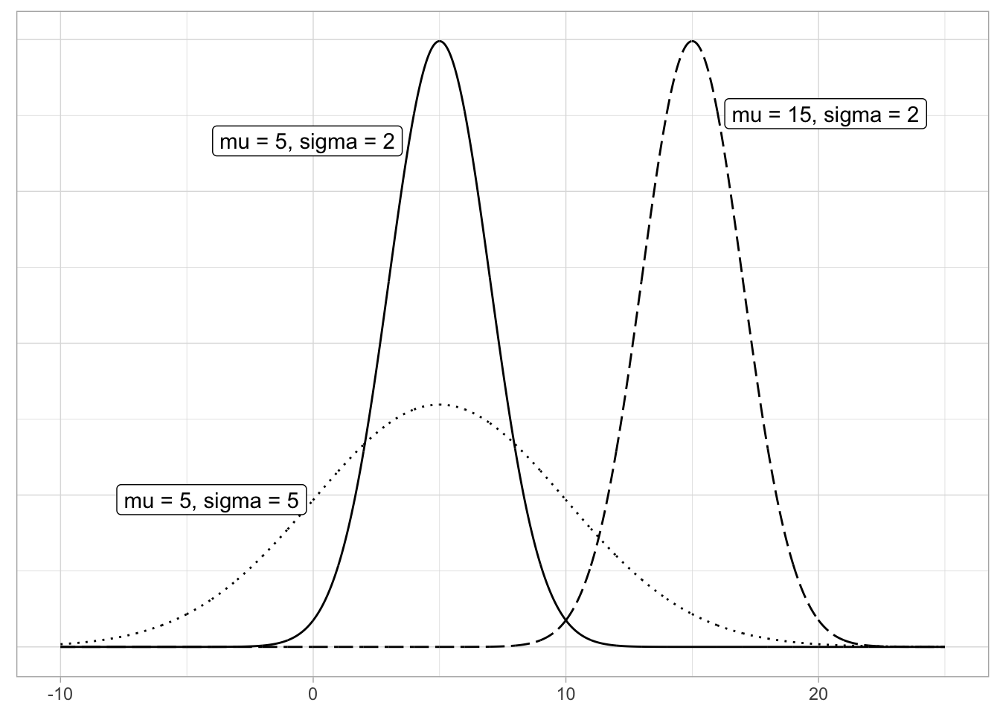
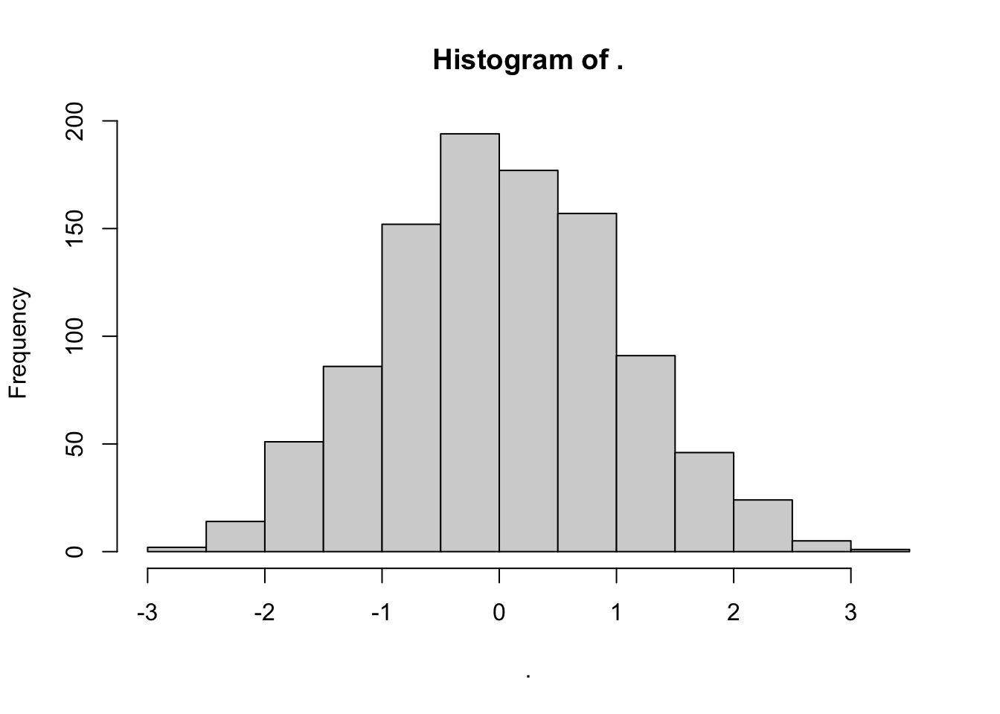
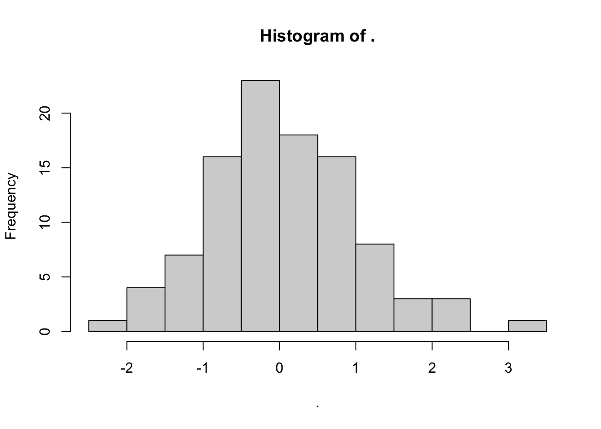
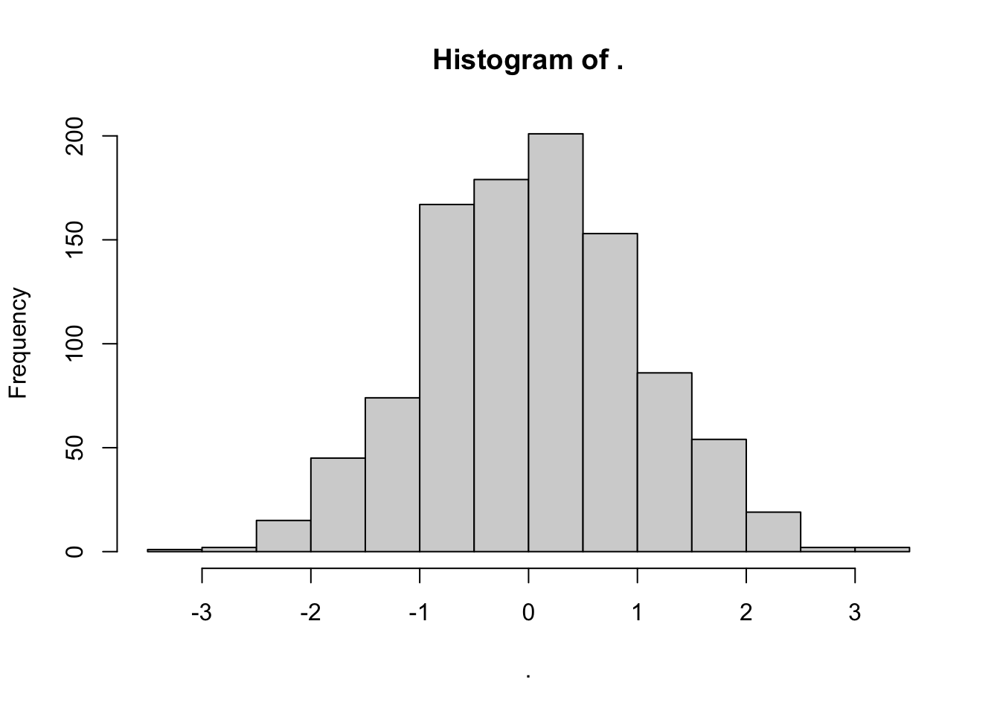

Chapter 2 Tidyverse
Start by loading the packages which we will need in this chapter.
library(gapminder)
library(nycflights13)
library(fivethirtyeight)
library(PPBDS.data)
library(tidyverse)The tidyverse package will be used in every chapter. nycflights includes data associated with flights out of New York City’s three major airports. gapminder has data for countries across decades. fivethirtyeight cleans up data from the FiveThirtyEight team. PPBDS.data includes, as you might guess, data organized for use with this textbook.
2.1 Data Gathering
Recall the read_csv() function from chapter 1 of this textbook. In a previous exercise, we ran the following code chunk:
## Parsed with column specification:
## cols(
## country = col_character(),
## `1952` = col_double(),
## `1957` = col_double(),
## `1962` = col_double(),
## `1967` = col_double(),
## `1972` = col_double(),
## `1977` = col_double(),
## `1982` = col_double(),
## `1987` = col_double(),
## `1992` = col_double()
## )The result of this code chunk is pretty tame. It tells us that each comma from the .csv file corresponds to a column, and the column names are taken from the first line of the file. Then, the function “guesses” an appropriate data type for each of the columns it creates. Sometimes .csv files are a lot dirtier and require significant wrangling before you can explore the data and create usable graphics.
Let’s try to run read_csv() on another dataset. This is a link to a file containing the faculty’s gender data across departments at Harvard University.
url <- "https://raw.githubusercontent.com/davidkane9/PPBDS/master/02-tidyverse/data/harvard-faculty-gender-final.csv"
gender_data <- read_csv(file = url)## Warning: Missing column names filled in: 'X1' [1], 'X2' [2], 'X3' [3], 'X4' [4],
## 'X5' [5], 'X6' [6], 'X7' [7], 'X8' [8], 'X9' [9], 'X10' [10], 'X11' [11],
## 'X12' [12]## Parsed with column specification:
## cols(
## X1 = col_character(),
## X2 = col_character(),
## X3 = col_character(),
## X4 = col_character(),
## X5 = col_character(),
## X6 = col_character(),
## X7 = col_character(),
## X8 = col_character(),
## X9 = col_character(),
## X10 = col_character(),
## X11 = col_character(),
## X12 = col_character()
## )Now, call gender_data.
## # A tibble: 46 x 12
## X1 X2 X3 X4 X5 X6 X7 X8 X9 X10 X11 X12
## <chr> <chr> <chr> <chr> <chr> <chr> <chr> <chr> <chr> <chr> <chr> <chr>
## 1 concen… full_… full_… assoc… assoc… asst… asst… lec_… lec_… prof… prof… divi…
## 2 Theate… 0 2 0 0 1 0 0 0 0 1 Arts…
## 3 Women,… 1 5 0 0 0 1 1 9 1 0 Soci…
## 4 Histor… 5 8 2 1 3 1 2 5 0 0 Soci…
## 5 Romanc… 6 9 1 1 1 2 2 11 0 0 Arts…
## 6 Music 6 8 0 0 1 0 5 4 0 2 Arts…
## 7 Africa… 19 15 1 0 1 0 0 0 1 0 Soci…
## 8 History 23 18 0 1 0 0 4 2 0 0 Soci…
## 9 Histor… 11 7 0 1 1 1 0 1 0 0 Arts…
## 10 Psycho… 11 7 1 2 4 2 1 0 0 0 Soci…
## # … with 36 more rowsAs you can see, the second row was likely meant to contain the column names. You can run ?read_csv() in your console to see the additional arguments that the read_csv() function may contain to make the new dataframe easier to work with.
## Parsed with column specification:
## cols(
## concentration = col_character(),
## full_profs_m = col_double(),
## full_profs_f = col_double(),
## assoc_m = col_double(),
## assoc_f = col_double(),
## asst_m = col_double(),
## asst_f = col_double(),
## lec_precep_adj_m = col_double(),
## lec_precep_adj_f = col_double(),
## prof_of_practice_m = col_double(),
## prof_of_practic_f = col_double(),
## division = col_character()
## )## # A tibble: 45 x 12
## concentration full_profs_m full_profs_f assoc_m assoc_f asst_m asst_f
## <chr> <dbl> <dbl> <dbl> <dbl> <dbl> <dbl>
## 1 Theater, Dan… 0 2 0 0 1 0
## 2 Women, Gende… 1 5 0 0 0 1
## 3 History of S… 5 8 2 1 3 1
## 4 Romance Lang… 6 9 1 1 1 2
## 5 Music 6 8 0 0 1 0
## 6 African & Af… 19 15 1 0 1 0
## 7 History 23 18 0 1 0 0
## 8 History of A… 11 7 0 1 1 1
## 9 Psychology 11 7 1 2 4 2
## 10 Sociology 11 7 2 0 0 1
## # … with 35 more rows, and 5 more variables: lec_precep_adj_m <dbl>,
## # lec_precep_adj_f <dbl>, prof_of_practice_m <dbl>, prof_of_practic_f <dbl>,
## # division <chr>Now suppose we want to change the data type of one of more of the columns. The col_type argument allows us to do this. Without the col_type argument, the division column is read in as a character column. Instead, we want it to be read in as a factor.
Now that the new dataset has been read in, explore it using the View() and glimpse() functions and the $ operator from the previous chapter.
## Rows: 45
## Columns: 12
## $ concentration <chr> "Theater, Dance & Media", "Women, Gender, & Sexual…
## $ full_profs_m <dbl> 0, 1, 5, 6, 6, 19, 23, 11, 11, 11, 13, 20, 33, 2, …
## $ full_profs_f <dbl> 2, 5, 8, 9, 8, 15, 18, 7, 7, 7, 8, 11, 17, 1, 2, 2…
## $ assoc_m <dbl> 0, 0, 2, 1, 0, 1, 0, 0, 1, 2, 1, 3, 2, 0, 1, 0, 1,…
## $ assoc_f <dbl> 0, 0, 1, 1, 0, 0, 1, 1, 2, 0, 0, 2, 1, 0, 0, 0, 0,…
## $ asst_m <dbl> 1, 0, 3, 1, 1, 1, 0, 1, 4, 0, 1, 1, 1, 0, 0, 0, 2,…
## $ asst_f <dbl> 0, 1, 1, 2, 0, 0, 0, 1, 2, 1, 2, 3, 2, 1, 1, 2, 0,…
## $ lec_precep_adj_m <dbl> 0, 1, 2, 2, 5, 0, 4, 0, 1, 0, 4, 4, 3, 0, 0, 2, 2,…
## $ lec_precep_adj_f <dbl> 0, 9, 5, 11, 4, 0, 2, 1, 0, 0, 10, 3, 2, 0, 0, 7, …
## $ prof_of_practice_m <dbl> 0, 1, 0, 0, 0, 1, 0, 0, 0, 0, 0, 2, 0, 0, 0, 0, 2,…
## $ prof_of_practic_f <dbl> 1, 0, 0, 0, 2, 0, 0, 0, 0, 0, 0, 1, 0, 0, 0, 0, 0,…
## $ division <chr> "Arts & Humanities", "Social Sciences", "Social Sc…## [1] "Arts & Humanities" "Social Sciences" "Social Sciences"
## [4] "Arts & Humanities" "Arts & Humanities" "Social Sciences"
## [7] "Social Sciences" "Arts & Humanities" "Social Sciences"
## [10] "Social Sciences" "Arts & Humanities" "Arts & Humanities"
## [13] "Arts & Humanities" "Arts & Humanities" "Science"
## [16] "Arts & Humanities" "Science" "Arts & Humanities"
## [19] "SEAS" "Arts & Humanities" "SEAS"
## [22] "Arts & Humanities" "Arts & Humanities" "Arts & Humanities"
## [25] "Social Sciences" "Science" "Science"
## [28] "Social Sciences" "Arts & Humanities" "Arts & Humanities"
## [31] "Science" "SEAS" "SEAS"
## [34] "Social Sciences" "Science" "Science"
## [37] "Science" "Science" "SEAS"
## [40] "Arts & Humanities" "Social Sciences" "SEAS"
## [43] "Arts & Humanities" "Science" NARun the summary() function on the gender_data dataframe.
## concentration full_profs_m full_profs_f assoc_m assoc_f
## Length:45 Min. : 0 Min. : 0 Min. : 0 Min. : 0.0
## Class :character 1st Qu.: 7 1st Qu.: 2 1st Qu.: 0 1st Qu.: 0.0
## Mode :character Median : 13 Median : 4 Median : 1 Median : 0.0
## Mean : 29 Mean : 10 Mean : 2 Mean : 0.8
## 3rd Qu.: 20 3rd Qu.: 7 3rd Qu.: 2 3rd Qu.: 1.0
## Max. :644 Max. :220 Max. :40 Max. :17.0
## asst_m asst_f lec_precep_adj_m lec_precep_adj_f prof_of_practice_m
## Min. : 0 Min. : 0 Min. : 0 Min. : 0 Min. : 0.0
## 1st Qu.: 0 1st Qu.: 0 1st Qu.: 0 1st Qu.: 0 1st Qu.: 0.0
## Median : 1 Median : 1 Median : 1 Median : 1 Median : 0.0
## Mean : 2 Mean : 2 Mean : 5 Mean : 5 Mean : 0.6
## 3rd Qu.: 2 3rd Qu.: 2 3rd Qu.: 3 3rd Qu.: 3 3rd Qu.: 1.0
## Max. :50 Max. :49 Max. :102 Max. :107 Max. :14.0
## prof_of_practic_f division
## Min. :0.0 Length:45
## 1st Qu.:0.0 Class :character
## Median :0.0 Mode :character
## Mean :0.4
## 3rd Qu.:0.0
## Max. :8.0You may notice that something appears to be wrong with this dataset. Which department could have employed 644 male full professors? Let’s explore what is going wrong here.
## # A tibble: 1 x 12
## concentration full_profs_m full_profs_f assoc_m assoc_f asst_m asst_f
## <chr> <dbl> <dbl> <dbl> <dbl> <dbl> <dbl>
## 1 Total 644 220 40 17 50 49
## # … with 5 more variables: lec_precep_adj_m <dbl>, lec_precep_adj_f <dbl>,
## # prof_of_practice_m <dbl>, prof_of_practic_f <dbl>, division <chr>It seems that one row of the table takes the sum of each of the other rows. This is likely the last row of the dataframe. Use tail() to print the last rows of the dataframe to check the final row.
## # A tibble: 6 x 12
## concentration full_profs_m full_profs_f assoc_m assoc_f asst_m asst_f
## <chr> <dbl> <dbl> <dbl> <dbl> <dbl> <dbl>
## 1 Near Eastern… 11 1 0 0 2 1
## 2 Economics 40 3 1 0 2 2
## 3 Environmenta… 13 0 1 1 1 0
## 4 Linguistics 5 0 1 1 0 1
## 5 Math 19 0 0 0 0 0
## 6 Total 644 220 40 17 50 49
## # … with 5 more variables: lec_precep_adj_m <dbl>, lec_precep_adj_f <dbl>,
## # prof_of_practice_m <dbl>, prof_of_practic_f <dbl>, division <chr>Now, remove the “Total” row because it will affect any dplyr functions we try to run on the dataframe. Check the tail() of the dataframe again to make sure that the proper row was removed.
## # A tibble: 6 x 12
## concentration full_profs_m full_profs_f assoc_m assoc_f asst_m asst_f
## <chr> <dbl> <dbl> <dbl> <dbl> <dbl> <dbl>
## 1 Biomedical E… 15 2 2 0 1 0
## 2 Near Eastern… 11 1 0 0 2 1
## 3 Economics 40 3 1 0 2 2
## 4 Environmenta… 13 0 1 1 1 0
## 5 Linguistics 5 0 1 1 0 1
## 6 Math 19 0 0 0 0 0
## # … with 5 more variables: lec_precep_adj_m <dbl>, lec_precep_adj_f <dbl>,
## # prof_of_practice_m <dbl>, prof_of_practic_f <dbl>, division <chr>The data we need to answer a question is not always in a spreadsheet ready for us to read. For example, the US murders dataset we used in the R Basics chapter originally comes from this Wikipedia page:
url <- paste0("https://en.wikipedia.org/w/index.php?title=",
"Gun_violence_in_the_United_States_by_state",
"&direction=prev&oldid=810166167")You can see the data table when you visit the webpage:

To get this data, we need to do some web scraping.
Web scraping, or web harvesting, is the term we use to describe the process of extracting data from a website. The reason we can do this is because the information used by a browser to render webpages is received as a text file from a server. The text is code written in hyper text markup language (HTML). Every browser has a way to show the html source code for a page, each one different. On Chrome, you can use Control-U on a PC and command+alt+U on a Mac. You will see something like this:

2.1.1 HTML
Because this code is accessible, we can download the HTML file, import it into R, and then write programs to extract the information we need from the page. However, once we look at HTML code, this might seem like a daunting task. But we will show you some convenient tools to facilitate the process. To get an idea of how it works, here are a few lines of code from the Wikipedia page that provides the US murders data:
<table class="wikitable sortable">
<tr>
<th>State</th>
<th><a href="/wiki/List_of_U.S._states_and_territories_by_population"
title="List of U.S. states and territories by population">Population</a><br />
<small>(total inhabitants)</small><br />
<small>(2015)</small> <sup id="cite_ref-1" class="reference">
<a href="#cite_note-1">[1]</a></sup></th>
<th>Murders and Nonnegligent
<p>Manslaughter<br />
<small>(total deaths)</small><br />
<small>(2015)</small> <sup id="cite_ref-2" class="reference">
<a href="#cite_note-2">[2]</a></sup></p>
</th>
<th>Murder and Nonnegligent
<p>Manslaughter Rate<br />
<small>(per 100,000 inhabitants)</small><br />
<small>(2015)</small></p>
</th>
</tr>
<tr>
<td><a href="/wiki/Alabama" title="Alabama">Alabama</a></td>
<td>4,853,875</td>
<td>348</td>
<td>7.2</td>
</tr>
<tr>
<td><a href="/wiki/Alaska" title="Alaska">Alaska</a></td>
<td>737,709</td>
<td>59</td>
<td>8.0</td>
</tr>
<tr>You can actually see the data, except data values are surrounded by html code such as <td>. We can also see a pattern of how it is stored. If you know HTML, you can write programs that leverage knowledge of these patterns to extract what we want. We also take advantage of a language widely used to make webpages look “pretty” called Cascading Style Sheets (CSS).
Although we provide tools that make it possible to scrape data without knowing HTML, as a data scientist it is quite useful to learn some HTML and CSS. Not only does this improve your scraping skills, but it might come in handy if you are creating a webpage to showcase your work.
2.1.2 The rvest package
The tidyverse provides a web harvesting package called rvest. The first step using this package is to import the webpage into R. The package makes this quite simple:
Note that the entire Murders in the US Wikipedia webpage is now contained in h. The class of this object is:
## [1] "xml_document" "xml_node"The rvest package is actually more general; it handles XML documents. XML is a general markup language (that’s what the ML stands for) that can be used to represent any kind of data. HTML is a specific type of XML specifically developed for representing webpages. Here we focus on HTML documents.
Now, how do we extract the table from the object h? If we print h, we don’t really see much:
## {html_document}
## <html class="client-nojs" lang="en" dir="ltr">
## [1] <head>\n<meta http-equiv="Content-Type" content="text/html; charset=UTF-8 ...
## [2] <body class="mediawiki ltr sitedir-ltr mw-hide-empty-elt ns-0 ns-subject ...We can see all the code that defines the downloaded webpage using the html_text function like this:
We don’t show the output here because it includes thousands of characters, but if we look at it, we can see the data we are after are stored in an HTML table: you can see this in this line of the HTML code above <table class="wikitable sortable">. The different parts of an HTML document, often defined with a message in between < and > are referred to as nodes. The rvest package includes functions to extract nodes of an HTML document: html_nodes extracts all nodes of different types and html_node extracts the first one. To extract the tables from the html code we use:
Now, instead of the entire webpage, we just have the html code for the tables in the page:
## {xml_nodeset (2)}
## [1] <table class="wikitable sortable"><tbody>\n<tr>\n<th>State\n</th>\n<th>\n ...
## [2] <table class="nowraplinks hlist mw-collapsible mw-collapsed navbox-inner" ...The table we are interested is the first one:
## {html_node}
## <table class="wikitable sortable">
## [1] <tbody>\n<tr>\n<th>State\n</th>\n<th>\n<a href="/wiki/List_of_U.S._states ...This is clearly not a tidy dataset, not even a data frame. In the code above, you can definitely see a pattern and writing code to extract just the data is very doable. In fact, rvest includes a function just for converting HTML tables into data frames:
## [1] "data.frame"We are now much closer to having a usable data table:
## state population total murder_rate
## 1 Alabama 4,853,875 348 7.2
## 2 Alaska 737,709 59 8.0
## 3 Arizona 6,817,565 309 4.5
## 4 Arkansas 2,977,853 181 6.1
## 5 California 38,993,940 1,861 4.8
## 6 Colorado 5,448,819 176 3.2We still have some wrangling to do. For example, we need to remove the commas and turn characters into numbers. Before continuing with this, we will learn a more general approach to extracting information from web sites.
2.1.3 CSS selectors
The default look of a webpage made with the most basic HTML is quite unattractive. The aesthetically pleasing pages we see today are made using CSS to define the look and style of webpages. The fact that all pages for a company have the same style usually results from their use of the same CSS file to define the style. The general way these CSS files work is by defining how each of the elements of a webpage will look. The title, headings, itemized lists, tables, and links, for example, each receive their own style including font, color, size, and distance from the margin. CSS does this by leveraging patterns used to define these elements, referred to as selectors. An example of such a pattern, which we used above, is table, but there are many, many more.
If we want to grab data from a webpage and we happen to know a selector that is unique to the part of the page containing this data, we can use the html_nodes function. However, knowing which selector can be quite complicated.
In fact, the complexity of webpages has been increasing as they become more sophisticated. For some of the more advanced ones, it seems almost impossible to find the nodes that define a particular piece of data. However, selector gadgets actually make this possible.
SelectorGadget1 http://selectorgadget.com/ is piece of software that allows you to interactively determine what CSS selector you need to extract specific components from the webpage. If you plan on scraping data other than tables from html pages, we highly recommend you install it. A Chrome extension is available which permits you to turn on the gadget and then, as you click through the page, it highlights parts and shows you the selector you need to extract these parts. There are various demos of how to do this including rvest author Hadley Wickham’s vignette2 https://cran.r-project.org/web/packages/rvest/vignettes/selectorgadget.html and other tutorials based on the vignette3 https://stat4701.github.io/edav/2015/04/02/rvest_tutorial/.4 https://www.analyticsvidhya.com/blog/2017/03/beginners-guide-on-web-scraping-in-r-using-rvest-with-hands-on-knowledge/
2.1.4 JSON
Sharing data on the internet has become more and more common. Unfortunately, providers use different formats, which makes it harder for data scientists to wrangle data into R. Yet there are some standards that are also becoming more common. Currently, a format that is widely being adopted is the JavaScript Object Notation or JSON. Because this format is very general, it is nothing like a spreadsheet. This JSON file looks more like the code you use to define a list. Here is an example of information stored in a JSON format:
## [
## {
## "name": "Miguel",
## "student_id": 1,
## "exam_1": 85,
## "exam_2": 86
## },
## {
## "name": "Sofia",
## "student_id": 2,
## "exam_1": 94,
## "exam_2": 93
## },
## {
## "name": "Aya",
## "student_id": 3,
## "exam_1": 87,
## "exam_2": 88
## },
## {
## "name": "Cheng",
## "student_id": 4,
## "exam_1": 90,
## "exam_2": 91
## }
## ]The file above actually represents a data frame. To read it, we can use the function fromJSON from the jsonlite package. Note that JSON files are often made available via the internet. Several organizations provide a JSON API or a web service that you can connect directly to and obtain data. Here is an example:
This downloads a list. The first argument tells you when you downloaded it:
and the second is a data table:
You can learn much more by examining tutorials and help files from the jsonlite package. This package is intended for relatively simple tasks such as converging data into tables. For more flexibility, we recommend rjson.
2.2 Summarizing Data
FIGURE 2.1: Diagram of group_by() and summarize().

2.2.1 summarize() function
The next common task when working with data frames is to compute summary statistics. Summary statistics are single numerical values that summarize a large number of values. Commonly known examples of summary statistics include the mean (also called the average) and the median (the middle value). Other examples of summary statistics that might not immediately come to mind include the sum, the smallest value also called the minimum, the largest value also called the maximum, and the standard deviation.
Return to a familiar dataset. Let’s calculate two summary statistics of the temp temperature variable in the weather data frame: the mean and standard deviation (recall from Section ?? that the weather data frame is included in the nycflights13 package). To compute these summary statistics, we need the mean() and sd() summary functions in R. Summary functions in R take in many values and return a single value.
Recall the output of the summary() function.
## origin year month day hour
## Length:26115 Min. :2013 Min. : 1.0 Min. : 1.0 Min. : 0.0
## Class :character 1st Qu.:2013 1st Qu.: 4.0 1st Qu.: 8.0 1st Qu.: 6.0
## Mode :character Median :2013 Median : 7.0 Median :16.0 Median :11.0
## Mean :2013 Mean : 6.5 Mean :15.7 Mean :11.5
## 3rd Qu.:2013 3rd Qu.: 9.0 3rd Qu.:23.0 3rd Qu.:17.0
## Max. :2013 Max. :12.0 Max. :31.0 Max. :23.0
##
## temp dewp humid wind_dir wind_speed
## Min. : 11 Min. :-10 Min. : 13 Min. : 0 Min. : 0
## 1st Qu.: 40 1st Qu.: 26 1st Qu.: 47 1st Qu.:120 1st Qu.: 7
## Median : 55 Median : 42 Median : 62 Median :220 Median : 10
## Mean : 55 Mean : 41 Mean : 63 Mean :200 Mean : 11
## 3rd Qu.: 70 3rd Qu.: 58 3rd Qu.: 79 3rd Qu.:290 3rd Qu.: 14
## Max. :100 Max. : 78 Max. :100 Max. :360 Max. :1048
## NA's :1 NA's :1 NA's :1 NA's :460 NA's :4
## wind_gust precip pressure visib
## Min. :16 Min. :0.00 Min. : 984 Min. : 0.0
## 1st Qu.:21 1st Qu.:0.00 1st Qu.:1013 1st Qu.:10.0
## Median :24 Median :0.00 Median :1018 Median :10.0
## Mean :25 Mean :0.00 Mean :1018 Mean : 9.3
## 3rd Qu.:29 3rd Qu.:0.00 3rd Qu.:1023 3rd Qu.:10.0
## Max. :67 Max. :1.21 Max. :1042 Max. :10.0
## NA's :20778 NA's :2729
## time_hour temp_in_C
## Min. :2013-01-01 01:00:00 Min. :-12
## 1st Qu.:2013-04-01 21:30:00 1st Qu.: 4
## Median :2013-07-01 14:00:00 Median : 13
## Mean :2013-07-01 18:26:37 Mean : 13
## 3rd Qu.:2013-09-30 13:00:00 3rd Qu.: 21
## Max. :2013-12-30 18:00:00 Max. : 38
## NA's :1This function offers an array of summary statistics for each of the columns of the dataset, but summarize() (or alternatively summarise()) allows us to calculate these statistics on individual columns of the dataset.
More precisely, we’ll use the mean() and sd() summary functions within the summarize() function from the dplyr package. Note you can also use the British English spelling of summarise(). The summarize() function takes in a data frame and returns a data frame with only one row corresponding to the summary statistics.
We’ll save the results in a new data frame called summary_temp that will have two columns/variables: the mean and the std_dev:
## # A tibble: 1 x 2
## mean std_dev
## <dbl> <dbl>
## 1 NA NAWhy are the values returned NA?`NA is how R encodes missing values where NA indicates “not available” or “not applicable.” If a value for a particular row and a particular column does not exist, NA is stored instead. Values can be missing for many reasons. Perhaps the data was collected but someone forgot to enter it? Perhaps the data was not collected at all because it was too difficult to do so? Perhaps there was an erroneous value that someone entered that has been corrected to read as missing? You’ll often encounter issues with missing values when working with real data.
Going back to our summary_temp output, by default any time you try to calculate a summary statistic of a variable that has one or more NA missing values in R, NA is returned. To work around this fact, you can set the na.rm argument to TRUE, where rm is short for “remove”; this will ignore any NA missing values and only return the summary value for all non-missing values.
The code that follows computes the mean and standard deviation of all non-missing values of temp:
summary_temp <- weather %>%
summarize(mean = mean(temp, na.rm = TRUE),
std_dev = sd(temp, na.rm = TRUE))
summary_temp## # A tibble: 1 x 2
## mean std_dev
## <dbl> <dbl>
## 1 55.3 17.8Notice how the na.rm = TRUE are used as arguments to the mean() and sd() summary functions individually, and not to the summarize() function.
However, one needs to be cautious whenever ignoring missing values as we’ve just done. There are possible ramifications of blindly sweeping rows with missing values “under the rug.” This is in fact why the na.rm argument to any summary statistic function in R is set to FALSE by default. In other words, R does not ignore rows with missing values by default. R is alerting you to the presence of missing data and you should be mindful of this missingness and any potential causes of this missingness throughout your analysis.
What are other summary functions we can use inside the summarize() verb to compute summary statistics? You ou can use any function in R that takes many values and returns just one. Here are just a few:
-
mean(): the average -
sd(): the standard deviation, which is a measure of spread -
min()andmax(): the minimum and maximum values, respectively -
IQR(): interquartile range -
sum(): the total amount when adding multiple numbers -
n(): a count of the number of rows in each group.
Let’s return to the gain variable from the previous chapter and look at some summary statistics by considering multiple summary functions at once in the same summarize() code:
gain_summary <- flights %>%
summarize(
min = min(gain, na.rm = TRUE),
q1 = quantile(gain, 0.25, na.rm = TRUE),
median = quantile(gain, 0.5, na.rm = TRUE),
q3 = quantile(gain, 0.75, na.rm = TRUE),
max = max(gain, na.rm = TRUE),
mean = mean(gain, na.rm = TRUE),
sd = sd(gain, na.rm = TRUE),
missing = sum(is.na(gain))
)
gain_summary## # A tibble: 1 x 8
## min q1 median q3 max mean sd missing
## <dbl> <dbl> <dbl> <dbl> <dbl> <dbl> <dbl> <int>
## 1 -109 -17 -7 3 196 -5.66 18.0 9430We see for example that the average gain is +5 minutes, while the largest is +109 minutes! However, this code would take some time to type out in practice.
We can also run summary statistics across() multiple columns at the same time. To get a better understanding of the across() helper function, run ?across in your console and see what arguments it takes. Suppose we wanted to take the mean() of both the temp and the dewp variables.
## # A tibble: 1 x 2
## temp dewp
## <dbl> <dbl>
## 1 NA NAAgain, we encounter NA values missing values, and have to set na.rm = TRUE as an argument for the mean() function.
## # A tibble: 1 x 2
## temp dewp
## <dbl> <dbl>
## 1 55.3 41.4## # A tibble: 1 x 14
## year month day hour temp dewp humid wind_dir wind_speed wind_gust
## <dbl> <dbl> <dbl> <dbl> <dbl> <dbl> <dbl> <dbl> <dbl> <dbl>
## 1 2013 6.50 15.7 11.5 55.3 41.4 62.5 200. 10.5 25.5
## # … with 4 more variables: precip <dbl>, pressure <dbl>, visib <dbl>,
## # temp_in_C <dbl>2.2.2 group_by() function
Say instead of a single mean temperature for the whole year, you would like 12 mean temperatures, one for each of the 12 months separately. In other words, we would like to compute the mean temperature split by month. We can do this by “grouping” temperature observations by the values of another variable, in this case by the 12 values of the variable month. Run the following code:
summary_monthly_temp <- weather %>%
group_by(month) %>%
summarize(mean = mean(temp, na.rm = TRUE),
std_dev = sd(temp, na.rm = TRUE))## `summarise()` ungrouping output (override with `.groups` argument)## # A tibble: 12 x 3
## month mean std_dev
## <int> <dbl> <dbl>
## 1 1 35.6 10.2
## 2 2 34.3 6.98
## 3 3 39.9 6.25
## 4 4 51.7 8.79
## 5 5 61.8 9.68
## 6 6 72.2 7.55
## 7 7 80.1 7.12
## 8 8 74.5 5.19
## 9 9 67.4 8.47
## 10 10 60.1 8.85
## 11 11 45.0 10.4
## 12 12 38.4 9.98This code is identical to the previous code that created summary_temp, but with an extra group_by(month) added before the summarize(). Grouping the weather dataset by month and then applying the summarize() functions yields a data frame that displays the mean and standard deviation temperature split by the 12 months of the year.
It is important to note that the group_by() function doesn’t change data frames by itself. Rather it changes the meta-data, or data about the data, specifically the grouping structure. It is only after we apply the summarize() function that the data frame changes.
Run this code (do not forget to load its package nycflights13 in your console if you
have not already):
## # A tibble: 336,776 x 22
## year month day dep_time sched_dep_time dep_delay arr_time sched_arr_time
## <int> <int> <int> <int> <int> <dbl> <int> <int>
## 1 2013 1 1 517 515 2 830 819
## 2 2013 1 1 533 529 4 850 830
## 3 2013 1 1 542 540 2 923 850
## 4 2013 1 1 544 545 -1 1004 1022
## 5 2013 1 1 554 600 -6 812 837
## 6 2013 1 1 554 558 -4 740 728
## 7 2013 1 1 555 600 -5 913 854
## 8 2013 1 1 557 600 -3 709 723
## 9 2013 1 1 557 600 -3 838 846
## 10 2013 1 1 558 600 -2 753 745
## # … with 336,766 more rows, and 14 more variables: arr_delay <dbl>,
## # carrier <chr>, flight <int>, tailnum <chr>, origin <chr>, dest <chr>,
## # air_time <dbl>, distance <dbl>, hour <dbl>, minute <dbl>, time_hour <dttm>,
## # gain <dbl>, hours <dbl>, gain_per_hour <dbl>Observe that the first line of the output reads # A tibble: 336,776 x 19. This is an example of meta-data, in this case the number of observations/rows and variables/columns in flights. The actual data itself are the subsequent table of values. Now let’s pipe the flights data frame into group_by(origin):
## # A tibble: 336,776 x 22
## # Groups: origin [3]
## year month day dep_time sched_dep_time dep_delay arr_time sched_arr_time
## <int> <int> <int> <int> <int> <dbl> <int> <int>
## 1 2013 1 1 517 515 2 830 819
## 2 2013 1 1 533 529 4 850 830
## 3 2013 1 1 542 540 2 923 850
## 4 2013 1 1 544 545 -1 1004 1022
## 5 2013 1 1 554 600 -6 812 837
## 6 2013 1 1 554 558 -4 740 728
## 7 2013 1 1 555 600 -5 913 854
## 8 2013 1 1 557 600 -3 709 723
## 9 2013 1 1 557 600 -3 838 846
## 10 2013 1 1 558 600 -2 753 745
## # … with 336,766 more rows, and 14 more variables: arr_delay <dbl>,
## # carrier <chr>, flight <int>, tailnum <chr>, origin <chr>, dest <chr>,
## # air_time <dbl>, distance <dbl>, hour <dbl>, minute <dbl>, time_hour <dttm>,
## # gain <dbl>, hours <dbl>, gain_per_hour <dbl>Observe that now there is additional meta-data: # Groups: origin [3] indicating that the grouping structure meta-data has been set based on the 3 possible levels of the categorical variable origin: "EWR", "JFK", and "LGA". On the other hand, observe that the data has not changed: it is still a table of 336,776 \(\times\) 19 values.
Only by combining a group_by() with another data wrangling operation, in this case summarize(), will the data actually be transformed.
Let’s revisit the n() counting summary function we briefly introduced previously. Recall that the n() function counts rows. This is opposed to the sum() summary function that returns the sum of a numerical variable. For example, suppose we’d like to count how many flights departed each of the three airports in New York City:
## `summarise()` ungrouping output (override with `.groups` argument)## # A tibble: 3 x 2
## origin count
## <chr> <int>
## 1 EWR 120835
## 2 JFK 111279
## 3 LGA 104662We see that Newark ("EWR") had the most flights departing in 2013 followed by "JFK" and lastly by LaGuardia ("LGA"). Note there is a subtle but important difference between sum() and n(); while sum() returns the sum of a numerical variable, n() returns a count of the number of rows/observations.
If you would like to remove this grouping structure meta-data, we can pipe the resulting data frame into the ungroup() function:
## # A tibble: 336,776 x 22
## year month day dep_time sched_dep_time dep_delay arr_time sched_arr_time
## <int> <int> <int> <int> <int> <dbl> <int> <int>
## 1 2013 1 1 517 515 2 830 819
## 2 2013 1 1 533 529 4 850 830
## 3 2013 1 1 542 540 2 923 850
## 4 2013 1 1 544 545 -1 1004 1022
## 5 2013 1 1 554 600 -6 812 837
## 6 2013 1 1 554 558 -4 740 728
## 7 2013 1 1 555 600 -5 913 854
## 8 2013 1 1 557 600 -3 709 723
## 9 2013 1 1 557 600 -3 838 846
## 10 2013 1 1 558 600 -2 753 745
## # … with 336,766 more rows, and 14 more variables: arr_delay <dbl>,
## # carrier <chr>, flight <int>, tailnum <chr>, origin <chr>, dest <chr>,
## # air_time <dbl>, distance <dbl>, hour <dbl>, minute <dbl>, time_hour <dttm>,
## # gain <dbl>, hours <dbl>, gain_per_hour <dbl>Observe how the # Groups: origin [3] meta-data is no longer present.
2.2.3 Grouping by more than one variable
You are not limited to grouping by one variable. Say you want to know the number of flights leaving each of the three New York City airports for each month. We can also group by a second variable month using group_by(origin, month):
## `summarise()` regrouping output by 'origin' (override with `.groups` argument)## # A tibble: 36 x 3
## # Groups: origin [3]
## origin month count
## <chr> <int> <int>
## 1 EWR 1 9893
## 2 EWR 2 9107
## 3 EWR 3 10420
## 4 EWR 4 10531
## 5 EWR 5 10592
## 6 EWR 6 10175
## 7 EWR 7 10475
## 8 EWR 8 10359
## 9 EWR 9 9550
## 10 EWR 10 10104
## # … with 26 more rowsObserve that there are 36 rows to by_origin_monthly because there are 12 months for 3 airports (EWR, JFK, and LGA).
Why do we group_by(origin, month) and not group_by(origin) and then group_by(month)? Let’s investigate:
by_origin_monthly_incorrect <- flights %>%
group_by(origin) %>%
group_by(month) %>%
summarize(count = n())## `summarise()` ungrouping output (override with `.groups` argument)## # A tibble: 12 x 2
## month count
## <int> <int>
## 1 1 27004
## 2 2 24951
## 3 3 28834
## 4 4 28330
## 5 5 28796
## 6 6 28243
## 7 7 29425
## 8 8 29327
## 9 9 27574
## 10 10 28889
## 11 11 27268
## 12 12 28135What happened here is that the second group_by(month) overwrote the grouping structure meta-data of the earlier group_by(origin), so that in the end we are only grouping by month. The lesson here is if you want to group_by() two or more variables, you should include all the variables at the same time in the same group_by() adding a comma between the variable names.
2.3 Variable Types: Characters
2.3.1 Character Vectors
We’ve spent a lot of time working with big, beautiful data frames. That are clean and wholesome, like the Gapminder and nycflights13 data.
But real life will be much nastier. You will bring data into R from the outside world and discover there are problems. You might think: how hard can it be to deal with character data? And the answer is: it can be very hard!
- [Stack Exchange outage][stackexchange-outage]
- [Regexes to validate/match email addresses][email-regex]
- [Fixing an Atom bug][fix-atom-bug]
Here we discuss common remedial tasks for cleaning and transforming character data, also known as “strings”. A data frame or tibble will consist of one or more atomic vectors of a certain class. This lesson deals with things you can do with vectors of class character.
Here are some resources:
2.3.2 Manipulating character vectors
- [stringr package][stringr-web].
- A core package in the
tidyverse.It is installed viainstall.packages("tidyverse")and also loaded vialibrary(tidyverse). Of course, you can also install or load it individually. - Main functions start with
str_. Auto-complete is your friend. - Replacements for base functions re: string manipulation and regular expressions (see below).
- Main advantages over base functions: greater consistency about inputs and outputs. Outputs are more ready for your next analytical task.
- A core package in the
- [tidyr package][tidyr-web].
- Especially useful for functions that split one character vector into many and vice versa:
separate(),unite(),extract().
- Especially useful for functions that split one character vector into many and vice versa:
- The [glue package][glue-web] is fantastic for string interpolation. If
stringr::str_interp()doesn’t get your job done, check out the glue package.
2.3.3 Regular expressions resources
A God-awful and powerful language for expressing patterns to match in text or for search-and-replace. Frequently described as “write only”, because regular expressions (or regex) are easier to write than to read/understand. And they are not particularly easy to write.
- We again prefer the [stringr package][stringr-cran] over base functions. Why?
- Wraps [stringi][stringi-cran], which is a great place to look if stringr isn’t powerful enough.
- Standardized on [ICU regular expressions][icu-regex], so you can stop toggling
perl = TRUE/FALSEat random. - Results come back in a form that is much friendlier for downstream work.
- The [Strings chapter][r4ds-strings] of [R for Data Science][r4ds] (???) is a great resource.
- RStudio Cheat Sheet on [Regular Expressions in R][rstudio-regex-cheatsheet].
- Regex testers:
- [regex101.com][regex101]
- [regexr.com][regexr]
2.3.4 Character encoding resources
- [Strings subsection of data import chapter][r4ds-readr-strings] in [R for Data Science][r4ds] (???).
- Screeds on the Minimum Everyone Needs to Know about encoding:
- [The Absolute Minimum Every Software Developer Absolutely, Positively Must Know About Unicode and Character Sets (No Excuses!)][unicode-no-excuses]
- [What Every Programmer Absolutely, Positively Needs To Know About Encodings And Character Sets To Work With Text][programmers-encoding]
2.3.5 Character vectors that live in a data frame
Load the tidyverse, which includes stringr
2.3.6 Regex-free string manipulation with stringr and tidyr
Basic string manipulation tasks:
- Study a single character vector
- How long are the strings?
- Presence/absence of a literal string
- Operate on a single character vector
- Keep/discard elements that contain a literal string
- Split into two or more character vectors using a fixed delimiter
- Snip out pieces of the strings based on character position
- Collapse into a single string
- Operate on two or more character vectors
- Glue them together element-wise to get a new character vector.
fruit, words, and sentences are character vectors that ship with stringr for practicing.
2.3.7 Detect or filter on a target string
Determine presence/absence of a literal string with str_detect(). Spoiler: later we see str_detect() also detects regular expressions.
Which fruits actually use the word “fruit”?
## [1] FALSE FALSE FALSE FALSE FALSE FALSE FALSE FALSE FALSE FALSE FALSE TRUE
## [13] FALSE FALSE FALSE FALSE FALSE FALSE FALSE FALSE FALSE FALSE FALSE FALSE
## [25] FALSE TRUE FALSE FALSE FALSE FALSE FALSE FALSE FALSE FALSE TRUE FALSE
## [37] FALSE FALSE TRUE FALSE FALSE TRUE FALSE FALSE FALSE FALSE FALSE FALSE
## [49] FALSE FALSE FALSE FALSE FALSE FALSE FALSE FALSE TRUE FALSE FALSE FALSE
## [61] FALSE FALSE FALSE FALSE FALSE FALSE FALSE FALSE FALSE FALSE FALSE FALSE
## [73] FALSE FALSE TRUE FALSE FALSE FALSE TRUE FALSEWhat’s the easiest way to get the actual fruits that match? Use str_subset() to keep only the matching elements. Note we are storing this new vector my_fruit to use in later examples!
## [1] "breadfruit" "dragonfruit" "grapefruit" "jackfruit" "kiwi fruit"
## [6] "passionfruit" "star fruit" "ugli fruit"2.3.8 View a specific string
Use stringr::str_view() to create a window in your viewer that highlights a specified pattern for any and all instances within the list. Below we look at a subset of fruit and highlight the pattern “berry” within items in that list.
This can be helpful when you want to check that you are highlighting the correct pattern (especially when using regex). What do you think the following regex means? (This will be explained in more depth later)
2.3.9 String splitting by delimiter
Use stringr::str_split() to split strings on a delimiter. Some of our fruits are compound words, like “grapefruit”, but some have two words, like “ugli fruit”. Here we split on a single space " ", but show use of a regular expression later.
## [[1]]
## [1] "breadfruit"
##
## [[2]]
## [1] "dragonfruit"
##
## [[3]]
## [1] "grapefruit"
##
## [[4]]
## [1] "jackfruit"
##
## [[5]]
## [1] "kiwi" "fruit"
##
## [[6]]
## [1] "passionfruit"
##
## [[7]]
## [1] "star" "fruit"
##
## [[8]]
## [1] "ugli" "fruit"It’s bummer that we get a list back. But it must be so! In full generality, split strings must return list, because who knows how many pieces there will be?
If you are willing to commit to the number of pieces, you can use str_split_fixed() and get a character matrix. You’re welcome!
## [,1] [,2]
## [1,] "breadfruit" ""
## [2,] "dragonfruit" ""
## [3,] "grapefruit" ""
## [4,] "jackfruit" ""
## [5,] "kiwi" "fruit"
## [6,] "passionfruit" ""
## [7,] "star" "fruit"
## [8,] "ugli" "fruit"If the to-be-split variable lives in a data frame, tidyr::separate() will split it into 2 or more variables.
my_fruit_df <- tibble(my_fruit)
my_fruit_df %>%
separate(my_fruit, into = c("pre", "post"), sep = " ")## Warning: Expected 2 pieces. Missing pieces filled with `NA` in 5 rows [1, 2, 3,
## 4, 6].## # A tibble: 8 x 2
## pre post
## <chr> <chr>
## 1 breadfruit <NA>
## 2 dragonfruit <NA>
## 3 grapefruit <NA>
## 4 jackfruit <NA>
## 5 kiwi fruit
## 6 passionfruit <NA>
## 7 star fruit
## 8 ugli fruit2.3.10 Substring extraction (and replacement) by position
Count characters in your strings with str_length(). Note this is different from the length of the character vector itself.
## [1] 8## [1] 10 11 10 9 10 12 10 10You can snip out substrings based on character position with str_sub().
## [1] "app" "apr" "avo" "ban" "bel" "bil"The start and end arguments are vectorised. Example: a sliding 3-character window.
## # A tibble: 6 x 2
## fruit snip
## <chr> <chr>
## 1 apple "app"
## 2 apricot "pri"
## 3 avocado "oca"
## 4 banana "ana"
## 5 bell pepper " pe"
## 6 bilberry "rry"Finally, str_sub() also works for assignment, i.e. on the left hand side of <-.
## [1] "apple" "apricot" "avocado"## [1] "AAAle" "AAAicot" "AAAcado"2.3.11 Collapse a vector
You can collapse a character vector of length n > 1 to a single string with str_c(), which also has other uses (see the next section).
## [1] "apple, apricot, avocado, banana, bell pepper, bilberry"2.3.12 Create a character vector by catenating multiple vectors
If you have two or more character vectors of the same length, you can glue them together element-wise, to get a new vector of that length. Here are some … awful smoothie flavors?
## [1] "apple & bell pepper" "apricot & bilberry" "avocado & blackberry"
## [4] "banana & blackcurrant"Element-wise catenation can be combined with collapsing.
## [1] "apple & bell pepper, apricot & bilberry, avocado & blackberry, banana & blackcurrant"If the to-be-combined vectors are variables in a data frame, you can use tidyr::unite() to make a single new variable from them.
fruit_df <- tibble(
fruit1 = fruit[1:4],
fruit2 = fruit[5:8]
)
fruit_df %>%
unite("flavor_combo", fruit1, fruit2, sep = " & ")## # A tibble: 4 x 1
## flavor_combo
## <chr>
## 1 apple & bell pepper
## 2 apricot & bilberry
## 3 avocado & blackberry
## 4 banana & blackcurrant2.3.13 Substring replacement
You can replace a pattern with str_replace(). Here we use an explicit string-to-replace, but later we revisit with a regular expression.
## [1] "breadTHINGY" "dragonTHINGY" "grapeTHINGY" "jackTHINGY"
## [5] "kiwi THINGY" "passionTHINGY" "star THINGY" "ugli THINGY"A special case that comes up a lot is replacing NA, for which there is str_replace_na().
## [1] "canary melon" NA "watermelon"## [1] "canary melon" "UNKNOWN MELON" "watermelon"If the NA-afflicted variable lives in a data frame, you can use tidyr::replace_na().
## # A tibble: 3 x 1
## melons
## <chr>
## 1 canary melon
## 2 UNKNOWN MELON
## 3 watermelonAnd that concludes our treatment of regex-free manipulations of character data!
2.3.14 Regular expressions with stringr
FIGURE 2.2: From @ThePracticalDev
](02-tidyverse/images/regexp.jpg)
The country names in the gapminder dataset are convenient for examples. Load it now and store the 142 unique country names in the object countries.
2.3.15 Characters with special meaning
Frequently your string tasks cannot be expressed in terms of a fixed string, but can be described in terms of a pattern. Regular expressions, aka “regexes”, are the standard way to specify these patterns. In regexes, specific characters and constructs take on special meaning in order to match multiple strings.
The first metacharacter is the period ., which stands for any single character, except a newline (which by the way, is represented by \n). The regex a.b will match all countries that have an a, followed by any single character, followed by b. Yes, regexes are case sensitive, i.e. “Italy” does not match.
## [1] "Argentina" "Bosnia and Herzegovina"
## [3] "Burkina Faso" "Central African Republic"
## [5] "China" "Costa Rica"
## [7] "Dominican Republic" "Hong Kong, China"
## [9] "Jamaica" "Mauritania"
## [11] "Nicaragua" "South Africa"
## [13] "Swaziland" "Taiwan"
## [15] "Thailand" "Trinidad and Tobago"Notice that i.a matches “ina”, “ica”, “ita”, and more.
Anchors can be included to express where the expression must occur within the string. The ^ indicates the beginning of string and $ indicates the end.
Note how the regex i.a$ matches many fewer countries than i.a alone. Likewise, more elements of my_fruit match d than ^d, which requires “d” at string start.
## [1] "Argentina" "Bosnia and Herzegovina" "China"
## [4] "Costa Rica" "Hong Kong, China" "Jamaica"
## [7] "South Africa"## [1] "breadfruit" "dragonfruit"## [1] "dragonfruit"The metacharacter \b indicates a word boundary and \B indicates NOT a word boundary. This is our first encounter with something called “escaping” and right now I just want you at accept that we need to prepend a second backslash to use these sequences in regexes in R. We’ll come back to this tedious point later.
## [1] "canary melon" "rock melon" "watermelon"## [1] "canary melon" "rock melon"## [1] "watermelon"2.3.16 Character classes
Characters can be specified via classes. You can make them explicitly “by hand” or use some pre-existing ones. Character classes are usually given inside square brackets, [] but a few come up so often that we have a metacharacter for them, such as \d for a single digit.
Here we match ia at the end of the country name, preceded by one of the characters in the class. Or, in the negated class, preceded by anything but one of those characters.
## [1] "Albania" "Australia" "Indonesia" "Malaysia" "Mauritania"
## [6] "Mongolia" "Romania" "Slovenia" "Somalia" "Tanzania"
## [11] "Tunisia"## [1] "Algeria" "Austria" "Bolivia" "Bulgaria" "Cambodia"
## [6] "Colombia" "Croatia" "Ethiopia" "Gambia" "India"
## [11] "Liberia" "Namibia" "Nigeria" "Saudi Arabia" "Serbia"
## [16] "Syria" "Zambia"Here we revisit splitting my_fruit with two more general ways to match whitespace: the \s metacharacter and the POSIX class [:space:]. Notice that we must prepend an extra backslash \ to escape \s and the POSIX class has to be surrounded by two sets of square brackets.
# Remember this?
# str_split_fixed(fruit, pattern = " ", n = 2)
# Alternatives:
str_split_fixed(my_fruit, pattern = "\\s", n = 2)## [,1] [,2]
## [1,] "breadfruit" ""
## [2,] "dragonfruit" ""
## [3,] "grapefruit" ""
## [4,] "jackfruit" ""
## [5,] "kiwi" "fruit"
## [6,] "passionfruit" ""
## [7,] "star" "fruit"
## [8,] "ugli" "fruit"## [,1] [,2]
## [1,] "breadfruit" ""
## [2,] "dragonfruit" ""
## [3,] "grapefruit" ""
## [4,] "jackfruit" ""
## [5,] "kiwi" "fruit"
## [6,] "passionfruit" ""
## [7,] "star" "fruit"
## [8,] "ugli" "fruit"Let’s see the country names that contain punctuation.
## [1] "Congo, Dem. Rep." "Congo, Rep." "Cote d'Ivoire" "Guinea-Bissau"
## [5] "Hong Kong, China" "Korea, Dem. Rep." "Korea, Rep." "Yemen, Rep."2.3.17 Quantifiers
You can decorate characters (and other constructs, like metacharacters and classes) with information about how many characters they are allowed to match.
| quantifier | meaning | quantifier | meaning |
|---|---|---|---|
| * | 0 or more | {n} | exactly n |
| + | 1 or more | {n,} | at least n |
| ? | 0 or 1 | {,m} | at most m |
| {n,m} | between n and m, inclusive |
Explore these by inspecting matches for l followed by e, allowing for various numbers of characters in between.
l.*e will match strings with 0 or more characters in between, i.e. any string with an l eventually followed by an e. This is the most inclusive regex for this example, so we store the result as matches to use as a baseline for comparison.
## [1] "apple" "bell pepper" "bilberry"
## [4] "blackberry" "blood orange" "blueberry"
## [7] "cantaloupe" "chili pepper" "clementine"
## [10] "cloudberry" "elderberry" "huckleberry"
## [13] "lemon" "lime" "lychee"
## [16] "mulberry" "olive" "pineapple"
## [19] "purple mangosteen" "salal berry"Change the quantifier from * to + to require at least one intervening character. The strings that no longer match: all have a literal le with no preceding l and no following e.
list(match = intersect(matches, str_subset(fruit, pattern = "l.+e")),
no_match = setdiff(matches, str_subset(fruit, pattern = "l.+e")))## $match
## [1] "bell pepper" "bilberry" "blackberry"
## [4] "blood orange" "blueberry" "cantaloupe"
## [7] "chili pepper" "clementine" "cloudberry"
## [10] "elderberry" "huckleberry" "lime"
## [13] "lychee" "mulberry" "olive"
## [16] "purple mangosteen" "salal berry"
##
## $no_match
## [1] "apple" "lemon" "pineapple"Change the quantifier from * to ? to require at most one intervening character. In the strings that no longer match, the shortest gap between l and following e is at least two characters.
list(match = intersect(matches, str_subset(fruit, pattern = "l.?e")),
no_match = setdiff(matches, str_subset(fruit, pattern = "l.?e")))## $match
## [1] "apple" "bilberry" "blueberry"
## [4] "clementine" "elderberry" "huckleberry"
## [7] "lemon" "mulberry" "pineapple"
## [10] "purple mangosteen"
##
## $no_match
## [1] "bell pepper" "blackberry" "blood orange" "cantaloupe" "chili pepper"
## [6] "cloudberry" "lime" "lychee" "olive" "salal berry"Finally, we remove the quantifier and allow for no intervening characters. The strings that no longer match lack a literal le.
list(match = intersect(matches, str_subset(fruit, pattern = "le")),
no_match = setdiff(matches, str_subset(fruit, pattern = "le")))## $match
## [1] "apple" "clementine" "huckleberry"
## [4] "lemon" "pineapple" "purple mangosteen"
##
## $no_match
## [1] "bell pepper" "bilberry" "blackberry" "blood orange" "blueberry"
## [6] "cantaloupe" "chili pepper" "cloudberry" "elderberry" "lime"
## [11] "lychee" "mulberry" "olive" "salal berry"2.3.18 Escaping
You’ve probably caught on by now that there are certain characters with special meaning in regexes, including $ * + . ? [ ] ^ { } | ( ) \.
What if you really need the plus sign to be a literal plus sign and not a regex quantifier? You will need to escape it by prepending a backslash. But wait … there’s more! Before a regex is interpreted as a regular expression, it is also interpreted by R as a string. And backslash is used to escape there as well. So, in the end, you need to preprend two backslashes in order to match a literal plus sign in a regex.
This will be more clear with examples!
2.3.18.1 Escapes in plain old strings
Here is routine, non-regex use of backslash \ escapes in plain vanilla R strings. We intentionally use cat() instead of print() here.
-
To escape quotes inside quotes:
## Do you use "airquotes" much?Sidebar: eliminating the need for these escapes is exactly why people use double quotes inside single quotes and vice versa.
-
To insert newline (
\n) or tab (\t):## before the newline ## after the newline## before the tab after the tab
2.3.18.2 Escapes in regular expressions
Examples of using escapes in regexes to match characters that would otherwise have a special interpretation.
We know several gapminder country names contain a period. How do we isolate them? Although it’s tempting, this command str_subset(countries, pattern = ".") won’t work!
## [1] "Congo, Dem. Rep." "Congo, Rep." "Cote d'Ivoire" "Guinea-Bissau"
## [5] "Hong Kong, China" "Korea, Dem. Rep." "Korea, Rep." "Yemen, Rep."## [1] "Congo, Dem. Rep." "Congo, Rep." "Korea, Dem. Rep." "Korea, Rep."
## [5] "Yemen, Rep."A last example that matches an actual square bracket.
## [1] "whatever" "X is distributed U[0,1]"## [1] "X is distributed U[0,1]"2.3.19 Groups and backreferences
Your first use of regex is likely to be simple matching: detecting or isolating strings that match a pattern.
But soon you will want to use regexes to transform the strings in character vectors. That means you need a way to address specific parts of the matching strings and to operate on them.
You can use parentheses inside regexes to define groups and you can refer to those groups later with backreferences.
2.4 Variable Types: Factors
2.5 Variable Types: Date Times
2.6 Combining Data
There are many ways to bring data together.
Bind - This is basically smashing rocks tibbles together. You can smash things together row-wise (“row binding”) or column-wise (“column binding”). Why do I characterize this as rock-smashing? They’re often fairly crude operations, with lots of responsibility falling on the analyst for making sure that the whole enterprise even makes sense.
When row binding, you need to consider the variables in the two tibbles. Do the same variables exist in each? Are they of the same type? Different approaches for row binding have different combinations of flexibility vs rigidity around these matters.
When column binding, the onus is entirely on the analyst to make sure that the rows are aligned. I would avoid column binding whenever possible. If you can introduce new variables through any other, safer means, do so! By safer, I mean: use a mechanism where the row alignment is correct by definition. A proper join is the gold standard. In addition to joins, functions like dplyr::mutate() and tidyr::separate() can be very useful for forcing yourself to work inside the constraint of a tibble.
Join - Here you designate a variable (or a combination of variables) as a key. A row in one data frame gets matched with a row in another data frame because they have the same key. You can then bring information from variables in a secondary data frame into a primary data frame based on this key-based lookup. That description is incredibly oversimplified, but that’s the basic idea.
A variety of row- and column-wise operations fit into this framework, which implies there are many different flavors of join. The concepts and vocabulary around joins come from the database world. The relevant functions in dplyr follow this convention and all mention join. The most relevant base R function is merge().
Let’s explore each type of operation with a few examples.
2.6.1 Row binding
We used word count data from the Lord of the Rings trilogy to explore the concept of tidy data. That kicked off with a quiet, successful row bind. Let’s revisit that.
Here’s what a perfect row bind of three (untidy!) data frames looks like.
fship <- tribble(
~Film, ~Race, ~Female, ~Male,
"The Fellowship Of The Ring", "Elf", 1229, 971,
"The Fellowship Of The Ring", "Hobbit", 14, 3644,
"The Fellowship Of The Ring", "Man", 0, 1995
)
rking <- tribble(
~Film, ~Race, ~Female, ~Male,
"The Return Of The King", "Elf", 183, 510,
"The Return Of The King", "Hobbit", 2, 2673,
"The Return Of The King", "Man", 268, 2459
)
ttow <- tribble(
~Film, ~Race, ~Female, ~Male,
"The Two Towers", "Elf", 331, 513,
"The Two Towers", "Hobbit", 0, 2463,
"The Two Towers", "Man", 401, 3589
)
(lotr_untidy <- bind_rows(fship, ttow, rking))## # A tibble: 9 x 4
## Film Race Female Male
## <chr> <chr> <dbl> <dbl>
## 1 The Fellowship Of The Ring Elf 1229 971
## 2 The Fellowship Of The Ring Hobbit 14 3644
## 3 The Fellowship Of The Ring Man 0 1995
## 4 The Two Towers Elf 331 513
## 5 The Two Towers Hobbit 0 2463
## 6 The Two Towers Man 401 3589
## 7 The Return Of The King Elf 183 510
## 8 The Return Of The King Hobbit 2 2673
## 9 The Return Of The King Man 268 2459dplyr::bind_rows() works like a charm with these very row-bindable data frames! So does base rbind() (try it!).
But what if one of the data frames is somehow missing a variable? Let’s mangle one and find out.
## # A tibble: 9 x 4
## Film Race Female Male
## <chr> <chr> <dbl> <dbl>
## 1 The Fellowship Of The Ring Elf 1229 971
## 2 The Fellowship Of The Ring Hobbit 14 3644
## 3 The Fellowship Of The Ring Man 0 1995
## 4 The Two Towers Elf NA 513
## 5 The Two Towers Hobbit NA 2463
## 6 The Two Towers Man NA 3589
## 7 The Return Of The King Elf 183 510
## 8 The Return Of The King Hobbit 2 2673
## 9 The Return Of The King Man 268 2459## Error in rbind(deparse.level, ...): numbers of columns of arguments do not matchWe see that dplyr::bind_rows() does the row bind and puts NA in for the missing values caused by the lack of Female data from The Two Towers. Base rbind() refuses to row bind in this situation.
I invite you to experiment with other realistic, challenging scenarios, e.g.:
- Change the order of variables. Does row binding match variables by name or position?
- Row bind data frames where the variable
xis of one type in one data frame and another type in the other. Try combinations that you think should work and some that should not. What actually happens? - Row bind data frames in which the factor
xhas different levels in one data frame and different levels in the other. What happens?
In conclusion, row binding usually works when it should (especially with dplyr::bind_rows()) and usually doesn’t when it shouldn’t. The biggest risk is being aggravated.
2.6.2 Column binding
Column binding is much more dangerous because it often “works” when it should not. It’s your job to make sure the rows are aligned and it’s all too easy to screw this up.
The data in gapminder was originally excavated from 3 messy Excel spreadsheets: one each for life expectancy, population, and GDP per capital. Let’s relive some of the data wrangling joy and show a column bind gone wrong.
I create 3 separate data frames, do some evil row sorting, then column bind. There are no errors. The result gapminder_garbage sort of looks OK. Univariate summary statistics and exploratory plots will look OK. But I’ve created complete nonsense!
life_exp <- gapminder %>%
select(country, year, lifeExp)
pop <- gapminder %>%
arrange(year) %>%
select(pop)
gdp_percap <- gapminder %>%
arrange(pop) %>%
select(gdpPercap)
(gapminder_garbage <- bind_cols(life_exp, pop, gdp_percap))## # A tibble: 1,704 x 5
## country year lifeExp pop gdpPercap
## <fct> <int> <dbl> <int> <dbl>
## 1 Afghanistan 1952 28.8 8425333 880.
## 2 Afghanistan 1957 30.3 1282697 861.
## 3 Afghanistan 1962 32.0 9279525 2670.
## 4 Afghanistan 1967 34.0 4232095 1072.
## 5 Afghanistan 1972 36.1 17876956 1385.
## 6 Afghanistan 1977 38.4 8691212 2865.
## 7 Afghanistan 1982 39.9 6927772 1533.
## 8 Afghanistan 1987 40.8 120447 1738.
## 9 Afghanistan 1992 41.7 46886859 3021.
## 10 Afghanistan 1997 41.8 8730405 1890.
## # … with 1,694 more rows## Min. 1st Qu. Median Mean 3rd Qu. Max.
## 24 48 61 59 71 83## Min. 1st Qu. Median Mean 3rd Qu. Max.
## 24 48 61 59 71 83## [1] 241 113523## [1] 241 113523One last cautionary tale about column binding. This one requires the use of cbind() and it’s why the tidyverse is generally unwilling to recycle when combining things of different length.
I create a tibble with most of the gapminder columns. I create another with the remainder, but filtered down to just one country. I am able to cbind() these objects! Why? Because the 12 rows for Canada divide evenly into the 1704 rows of gapminder. Note that dplyr::bind_cols() refuses to column bind here.
gapminder_mostly <- gapminder %>% select(-pop, -gdpPercap)
gapminder_leftovers_filtered <- gapminder %>%
filter(country == "Canada") %>%
select(pop, gdpPercap)
gapminder_nonsense <- cbind(gapminder_mostly, gapminder_leftovers_filtered)
head(gapminder_nonsense, 14)## country continent year lifeExp pop gdpPercap
## 1 Afghanistan Asia 1952 29 14785584 11367
## 2 Afghanistan Asia 1957 30 17010154 12490
## 3 Afghanistan Asia 1962 32 18985849 13462
## 4 Afghanistan Asia 1967 34 20819767 16077
## 5 Afghanistan Asia 1972 36 22284500 18971
## 6 Afghanistan Asia 1977 38 23796400 22091
## 7 Afghanistan Asia 1982 40 25201900 22899
## 8 Afghanistan Asia 1987 41 26549700 26627
## 9 Afghanistan Asia 1992 42 28523502 26343
## 10 Afghanistan Asia 1997 42 30305843 28955
## 11 Afghanistan Asia 2002 42 31902268 33329
## 12 Afghanistan Asia 2007 44 33390141 36319
## 13 Albania Europe 1952 55 14785584 11367
## 14 Albania Europe 1957 59 17010154 12490This data frame isn’t obviously wrong, but it is wrong. See how the Canada’s population and GDP per capita repeat for each country?
Bottom line: Row bind when you need to, but inspect the results re: coercion. Column bind only if you must and be extremely paranoid.
2.6.3 Joins in dplyr
The most recent release of gapminder includes a new data frame, country_codes, with country names and ISO codes. Therefore you can also use it to practice joins.
gapminder %>%
select(country, continent) %>%
group_by(country) %>%
slice(1) %>%
left_join(country_codes)## Joining, by = "country"## # A tibble: 142 x 4
## # Groups: country [142]
## country continent iso_alpha iso_num
## <chr> <fct> <chr> <int>
## 1 Afghanistan Asia AFG 4
## 2 Albania Europe ALB 8
## 3 Algeria Africa DZA 12
## 4 Angola Africa AGO 24
## 5 Argentina Americas ARG 32
## 6 Australia Oceania AUS 36
## 7 Austria Europe AUT 40
## 8 Bahrain Asia BHR 48
## 9 Bangladesh Asia BGD 50
## 10 Belgium Europe BEL 56
## # … with 132 more rowsJoin (a.k.a. merge) two tables: dplyr join cheatsheet with comic characters and publishers.
Working with two small data frames: superheroes and publishers.
superheroes <- tibble::tribble(
~name, ~alignment, ~gender, ~publisher,
"Magneto", "bad", "male", "Marvel",
"Storm", "good", "female", "Marvel",
"Mystique", "bad", "female", "Marvel",
"Batman", "good", "male", "DC",
"Joker", "bad", "male", "DC",
"Catwoman", "bad", "female", "DC",
"Hellboy", "good", "male", "Dark Horse Comics"
)
publishers <- tibble::tribble(
~publisher, ~yr_founded,
"DC", 1934L,
"Marvel", 1939L,
"Image", 1992L
)Sorry, cheat sheet does not illustrate “multiple match” situations terribly well.
Sub-plot: watch the row and variable order of the join results for a healthy reminder of why it’s dangerous to rely on any of that in an analysis.
2.6.3.1 inner_join(superheroes, publishers)
inner_join(x, y): Return all rows fromxwhere there are matching values iny, and all columns fromxandy. If there are multiple matches betweenxandy, all combination of the matches are returned. This is a mutating join.
## Joining, by = "publisher"## # A tibble: 6 x 5
## name alignment gender publisher yr_founded
## <chr> <chr> <chr> <chr> <int>
## 1 Magneto bad male Marvel 1939
## 2 Storm good female Marvel 1939
## 3 Mystique bad female Marvel 1939
## 4 Batman good male DC 1934
## 5 Joker bad male DC 1934
## 6 Catwoman bad female DC 1934We lose Hellboy in the join because, although he appears in x = superheroes, his publisher Dark Horse Comics does not appear in y = publishers. The join result has all variables from x = superheroes plus yr_founded, from y.
|
|
|
|||||||||||||||||||||||||||||||||||||||||||||||||||||||||||||||||||||||||||||||||||||||||||||||||
2.6.3.2 semi_join(superheroes, publishers)
semi_join(x, y): Return all rows fromxwhere there are matching values iny, keeping just columns fromx. A semi join differs from an inner join because an inner join will return one row ofxfor each matching row ofy, where a semi join will never duplicate rows ofx. This is a filtering join.
## Joining, by = "publisher"## # A tibble: 6 x 4
## name alignment gender publisher
## <chr> <chr> <chr> <chr>
## 1 Magneto bad male Marvel
## 2 Storm good female Marvel
## 3 Mystique bad female Marvel
## 4 Batman good male DC
## 5 Joker bad male DC
## 6 Catwoman bad female DCWe get a similar result as with inner_join() but the join result contains only the variables originally found in x = superheroes.
|
|
|
||||||||||||||||||||||||||||||||||||||||||||||||||||||||||||||||||||||||||||||||||||||||
2.6.3.3 left_join(superheroes, publishers)
left_join(x, y): Return all rows fromx, and all columns fromxandy. If there are multiple matches betweenxandy, all combination of the matches are returned. This is a mutating join.
## Joining, by = "publisher"## # A tibble: 7 x 5
## name alignment gender publisher yr_founded
## <chr> <chr> <chr> <chr> <int>
## 1 Magneto bad male Marvel 1939
## 2 Storm good female Marvel 1939
## 3 Mystique bad female Marvel 1939
## 4 Batman good male DC 1934
## 5 Joker bad male DC 1934
## 6 Catwoman bad female DC 1934
## 7 Hellboy good male Dark Horse Comics NAWe basically get x = superheroes back, but with the addition of variable yr_founded, which is unique to y = publishers. Hellboy, whose publisher does not appear in y = publishers, has an NA for yr_founded.
|
|
|
||||||||||||||||||||||||||||||||||||||||||||||||||||||||||||||||||||||||||||||||||||||||||||||||||||||
2.6.3.4 anti_join(superheroes, publishers)
anti_join(x, y): Return all rows fromxwhere there are not matching values iny, keeping just columns fromx. This is a filtering join.
## Joining, by = "publisher"## # A tibble: 1 x 4
## name alignment gender publisher
## <chr> <chr> <chr> <chr>
## 1 Hellboy good male Dark Horse ComicsWe keep only Hellboy now (and do not get yr_founded).
|
|
|
||||||||||||||||||||||||||||||||||||||||||||||||||||||||||||||||||||
2.6.3.5 inner_join(publishers, superheroes)
inner_join(x, y): Return all rows fromxwhere there are matching values iny, and all columns fromxandy. If there are multiple matches betweenxandy, all combination of the matches are returned. This is a mutating join.
## Joining, by = "publisher"## # A tibble: 6 x 5
## publisher yr_founded name alignment gender
## <chr> <int> <chr> <chr> <chr>
## 1 DC 1934 Batman good male
## 2 DC 1934 Joker bad male
## 3 DC 1934 Catwoman bad female
## 4 Marvel 1939 Magneto bad male
## 5 Marvel 1939 Storm good female
## 6 Marvel 1939 Mystique bad femaleIn a way, this does illustrate multiple matches, if you think about it from the x = publishers direction. Every publisher that has a match in y = superheroes appears multiple times in the result, once for each match. In fact, we’re getting the same result as with inner_join(superheroes, publishers), up to variable order (which you should also never rely on in an analysis).
|
|
|
|||||||||||||||||||||||||||||||||||||||||||||||||||||||||||||||||||||||||||||||||||||||||||||||||
2.6.3.6 semi_join(publishers, superheroes)
semi_join(x, y): Return all rows fromxwhere there are matching values iny, keeping just columns fromx. A semi join differs from an inner join because an inner join will return one row ofxfor each matching row ofy, where a semi join will never duplicate rows ofx. This is a filtering join.
## Joining, by = "publisher"## # A tibble: 2 x 2
## publisher yr_founded
## <chr> <int>
## 1 DC 1934
## 2 Marvel 1939Now the effects of switching the x and y roles is more clear. The result resembles x = publishers, but the publisher Image is lost, because there are no observations where publisher == "Image" in y = superheroes.
|
|
|
||||||||||||||||||||||||||||||||||||||||||||||||||||||||||||||
2.6.3.7 left_join(publishers, superheroes)
left_join(x, y): Return all rows fromx, and all columns fromxandy. If there are multiple matches betweenxandy, all combination of the matches are returned. This is a mutating join.
## Joining, by = "publisher"## # A tibble: 7 x 5
## publisher yr_founded name alignment gender
## <chr> <int> <chr> <chr> <chr>
## 1 DC 1934 Batman good male
## 2 DC 1934 Joker bad male
## 3 DC 1934 Catwoman bad female
## 4 Marvel 1939 Magneto bad male
## 5 Marvel 1939 Storm good female
## 6 Marvel 1939 Mystique bad female
## 7 Image 1992 <NA> <NA> <NA>We get a similar result as with inner_join() but the publisher Image survives in the join, even though no superheroes from Image appear in y = superheroes. As a result, Image has NAs for name, alignment, and gender.
|
|
|
||||||||||||||||||||||||||||||||||||||||||||||||||||||||||||||||||||||||||||||||||||||||||||||||||||||
2.6.3.8 anti_join(publishers, superheroes)
anti_join(x, y): Return all rows fromxwhere there are not matching values iny, keeping just columns fromx. This is a filtering join.
## Joining, by = "publisher"## # A tibble: 1 x 2
## publisher yr_founded
## <chr> <int>
## 1 Image 1992We keep only publisher Image now (and the variables found in x = publishers).
|
|
|
||||||||||||||||||||||||||||||||||||||||||||||||||||||||||||
2.6.3.9 full_join(superheroes, publishers)
full_join(x, y): Return all rows and all columns from bothxandy. Where there are not matching values, returnsNAfor the one missing. This is a mutating join.
## Joining, by = "publisher"## # A tibble: 8 x 5
## name alignment gender publisher yr_founded
## <chr> <chr> <chr> <chr> <int>
## 1 Magneto bad male Marvel 1939
## 2 Storm good female Marvel 1939
## 3 Mystique bad female Marvel 1939
## 4 Batman good male DC 1934
## 5 Joker bad male DC 1934
## 6 Catwoman bad female DC 1934
## 7 Hellboy good male Dark Horse Comics NA
## 8 <NA> <NA> <NA> Image 1992We get all rows of x = superheroes plus a new row from y = publishers, containing the publisher Image. We get all variables from x = superheroes AND all variables from y = publishers. Any row that derives solely from one table or the other carries NAs in the variables found only in the other table.
|
|
|
|||||||||||||||||||||||||||||||||||||||||||||||||||||||||||||||||||||||||||||||||||||||||||||||||||||||||||
2.6.3.10 join data frames
“Joining” or “merging” two different datasets is tricky stuff. Let’s go through some more examples while reviewing the basic concepts. In the flights data frame, the variable carrier lists the carrier code for the different flights. While the corresponding airline names for "UA" and "AA" might be somewhat easy to guess (United and American Airlines), what airlines have codes "VX", "HA", and "B6"? This information is provided in a separate data frame airlines.
We see that in airports, carrier is the carrier code, while name is the full name of the airline company. Using this table, we can see that "VX", "HA", and "B6" correspond to Virgin America, Hawaiian Airlines, and JetBlue, respectively. However, wouldn’t it be nice to have all this information in a single data frame instead of two separate data frames? We can do this by “joining” the flights and airlines data frames.
Note that the values in the variable carrier in the flights data frame match the values in the variable carrier in the airlines data frame. In this case, we can use the variable carrier as a key variable to match the rows of the two data frames. Key variables are almost always identification variables that uniquely identify the observational units. This ensures that rows in both data frames are appropriately matched during the join. Hadley and Garrett (Grolemund and Wickham 2017) created the following diagram to help us understand how the different data frames in the nycflights13 package are linked by various key variables:
FIGURE 2.3: Relationships among nycflights tables

2.6.4 Matching “key” variable names
In both the flights and airlines data frames, the key variable we want to join/merge/match the rows by has the same name: carrier. Let’s use the inner_join() function to join the two data frames, where the rows will be matched by the variable carrier, and then compare the resulting data frames:
flights_joined <- flights %>%
inner_join(airlines, by = "carrier")
View(flights)
View(flights_joined)Observe that the flights and flights_joined data frames are identical except that flights_joined has an additional variable name. The values of name correspond to the airline companies’ names as indicated in the airlines data frame.
A visual representation of the inner_join() is shown in the figure below (Grolemund and Wickham 2017). There are other types of joins available (such as left_join(), right_join(), outer_join(), and anti_join()), but the inner_join() will solve nearly all of the problems you’ll encounter in this book.
FIGURE 2.4: Inner join.

2.6.5 Different “key” variable names
Say instead you are interested in the destinations of all domestic flights departing NYC in 2013, and you ask yourself questions like: “What cities are these airports in?”, or “Is "ORD" Orlando?”, or “Where is "FLL"?”.
The airports data frame contains the airport codes for each airport:
However, if you look at both the airports and flights data frames, you’ll find that the airport codes are in variables that have different names. In airports the airport code is in faa, whereas in flights the airport codes are in origin and dest.
In order to join these two data frames by airport code, our inner_join() operation will use the by = c("dest" = "faa") argument with modified code syntax allowing us to join two data frames where the key variable has a different name:
flights_with_airport_names <- flights %>%
inner_join(airports, by = c("dest" = "faa"))
View(flights_with_airport_names)Let’s construct the chain of pipe operators %>% that computes the number of flights from NYC to each destination, but also includes information about each destination airport:
named_dests <- flights %>%
group_by(dest) %>%
summarize(num_flights = n()) %>%
arrange(desc(num_flights)) %>%
inner_join(airports, by = c("dest" = "faa")) %>%
rename(airport_name = name)## `summarise()` ungrouping output (override with `.groups` argument)## # A tibble: 101 x 9
## dest num_flights airport_name lat lon alt tz dst tzone
## <chr> <int> <chr> <dbl> <dbl> <dbl> <dbl> <chr> <chr>
## 1 ORD 17283 Chicago Ohare Intl 42.0 -87.9 668 -6 A America…
## 2 ATL 17215 Hartsfield Jackson… 33.6 -84.4 1026 -5 A America…
## 3 LAX 16174 Los Angeles Intl 33.9 -118. 126 -8 A America…
## 4 BOS 15508 General Edward Law… 42.4 -71.0 19 -5 A America…
## 5 MCO 14082 Orlando Intl 28.4 -81.3 96 -5 A America…
## 6 CLT 14064 Charlotte Douglas … 35.2 -80.9 748 -5 A America…
## 7 SFO 13331 San Francisco Intl 37.6 -122. 13 -8 A America…
## 8 FLL 12055 Fort Lauderdale Ho… 26.1 -80.2 9 -5 A America…
## 9 MIA 11728 Miami Intl 25.8 -80.3 8 -5 A America…
## 10 DCA 9705 Ronald Reagan Wash… 38.9 -77.0 15 -5 A America…
## # … with 91 more rowsIn case you didn’t know, "ORD" is the airport code of Chicago O’Hare airport and "FLL" is the main airport in Fort Lauderdale, Florida, which can be seen in the airport_name variable.
2.6.6 Multiple “key” variables
Say instead we want to join two data frames by multiple key variables. For example, we see that in order to join the flights and weather data frames, we need more than one key variable: year, month, day, hour, and origin. This is because the combination of these 5 variables act to uniquely identify each observational unit in the weather data frame: hourly weather recordings at each of the 3 NYC airports.
We achieve this by specifying a vector of key variables to join by using the c() function. Recall that c() is short for “combine” or “concatenate.”
2.6.7 Normal forms
The data frames included in the nycflights13 package are in a form that minimizes redundancy of data. For example, the flights data frame only saves the carrier code of the airline company; it does not include the actual name of the airline. For example, the first row of flights has carrier equal to UA, but it does not include the airline name of “United Air Lines Inc.”
The names of the airline companies are included in the name variable of the airlines data frame. In order to have the airline company name included in flights, we could join these two data frames as follows:
We are capable of performing this join because each of the data frames have keys in common to relate one to another: the carrier variable in both the flights and airlines data frames. The key variable(s) that we base our joins on are often identification variables as we mentioned previously.
This is an important property of what’s known as normal forms of data. The process of decomposing data frames into less redundant tables without losing information is called normalization. More information is available on Wikipedia.
Both dplyr and SQL we mentioned in the introduction of this chapter use such normal forms. Given that they share such commonalities, once you learn either of these two tools, you can learn the other very easily.
2.7 “Tidy” data
Now, we will explore the topic of “tidy” data, a manner of data formatting particularly suited to the creation of graphics and the manipulation of the dataframe. You will see that having data stored in “tidy” format is about more than just what the everyday definition of the term “tidy” might suggest: having your data “neatly organized.” Instead, we define the term “tidy” as it’s used by data scientists who use R, outlining a set of rules by which data is saved.
Knowledge of this type of data formatting was not necessary for our treatment of data visualization in Chapter 1 and in previous data wrangling topics. This is because all the data used were already in “tidy” format. In this chapter, we’ll now see that this format is essential to using the tools we covered up until now. Furthermore, it will also be useful for all subsequent chapters in this book when we cover regression and statistical inference. First, however, we’ll show you how to import spreadsheet data in R.
Let’s load all the packages needed for this chapter (this assumes you’ve already installed them).
library(dplyr)
library(ggplot2)
library(readr)
library(tidyr)
library(nycflights13)
library(fivethirtyeight)Let’s switch gears and learn about the concept of “tidy” data format with a motivating example from the fivethirtyeight package. The fivethirtyeight package (Kim, Ismay, and Chunn 2019) provides access to the datasets used in many articles published by the data journalism website, FiveThirtyEight.com. For a complete list of all 127 datasets included in the fivethirtyeight package, check out the package webpage by going to: https://fivethirtyeight-r.netlify.com/articles/fivethirtyeight.html.
Let’s focus our attention on the drinks data frame and look at its first 5 rows:
## # A tibble: 5 x 2
## date S4248SM144NCEN
## <date> <dbl>
## 1 1992-01-01 3459
## 2 1992-02-01 3458
## 3 1992-03-01 4002
## 4 1992-04-01 4564
## 5 1992-05-01 4221After reading the help file by running ?drinks, you’ll see that drinks is a data frame containing results from a survey of the average number of servings of beer, spirits, and wine consumed in 193 countries. This data was originally reported on FiveThirtyEight.com in Mona Chalabi’s article: “Dear Mona Followup: Where Do People Drink The Most Beer, Wine And Spirits?”.
Let’s apply some of the data wrangling verbs on the drinks data frame:
-
filter()thedrinksdata frame to only consider 4 countries: the United States, China, Italy, and Saudi Arabia, then -
select()all columns excepttotal_litres_of_pure_alcoholby using the-sign, then -
rename()the variablesbeer_servings,spirit_servings, andwine_servingstobeer,spirit, andwine, respectively.
and save the resulting data frame in drinks_smaller:
# drinks_smaller <- drinks %>%
# filter(country %in% c("USA", "China", "Italy", "Saudi Arabia")) %>%
# select(-total_litres_of_pure_alcohol) %>%
# rename(beer = beer_servings, spirit = spirit_servings, wine = wine_servings)
# drinks_smallerLet’s now ask ourselves a question: "Using the drinks_smaller data frame, how would we create the side-by-side barplot below.
# drinks_smaller_tidy <- drinks_smaller %>%
# pivot_longer(cols = -country, names_to = "type", values_to = "servings")
#
# drinks_smaller_tidy_plot <- ggplot(drinks_smaller_tidy,
# aes(x = country, y = servings, fill = type)) +
# geom_col(position = "dodge") +
# labs(x = "country", y = "servings")Let’s break down the grammar of graphic:
- The categorical variable
countrywith four levels (China, Italy, Saudi Arabia, USA) would have to be mapped to thex-position of the bars. - The numerical variable
servingswould have to be mapped to they-position of the bars (the height of the bars). - The categorical variable
typewith three levels (beer, spirit, wine) would have to be mapped to thefillcolor of the bars.
Observe, however, that drinks_smaller has three separate variables beer, spirit, and wine. In order to use the ggplot() function to recreate the barplot we need a single variable type with three possible values: beer, spirit, and wine. We could then map this type variable to the fill aesthetic of our plot. In other words, to recreate the barplot, our data frame would have to look like this:
Observe that while drinks_smaller and drinks_smaller_tidy are both rectangular in shape and contain the same 12 numerical values (3 alcohol types by 4 countries), they are formatted differently. drinks_smaller is formatted in what’s known as “wide” format, whereas drinks_smaller_tidy is formatted in what’s known as “long/narrow” format.
In the context of doing data science in R, long/narrow format is also known as “tidy” format. In order to use the ggplot2 and dplyr packages for data visualization and data wrangling, your input data frames must be in “tidy” format. Thus, all non-“tidy” data must be converted to “tidy” format first. Before we convert non-“tidy” data frames like drinks_smaller to “tidy” data frames like drinks_smaller_tidy, let’s define “tidy” data.
2.7.1 Definition of “tidy” data
You have surely heard the word “tidy” in your life:
- “Tidy up your room!”
- “Write your homework in a tidy way so it is easier to provide feedback.”
- Marie Kondo’s best-selling book, The Life-Changing Magic of Tidying Up: The Japanese Art of Decluttering and Organizing, and Netflix TV series Tidying Up with Marie Kondo.
- “I am not by any stretch of the imagination a tidy person, and the piles of unread books on the coffee table and by my bed have a plaintive, pleading quality to me - ‘Read me, please!’” - Linda Grant
What does it mean for your data to be “tidy”? While “tidy” has a clear English meaning of “organized,” the word “tidy” in data science using R means that your data follows a standardized format. We will follow Hadley Wickham’s definition of “tidy” data (Wickham 2014):
A dataset is a collection of values, usually either numbers (if quantitative) or strings AKA text data (if qualitative/categorical). Values are organised in two ways. Every value belongs to a variable and an observation. A variable contains all values that measure the same underlying attribute (like height, temperature, duration) across units. An observation contains all values measured on the same unit (like a person, or a day, or a city) across attributes.
“Tidy” data is a standard way of mapping the meaning of a dataset to its structure. A dataset is messy or tidy depending on how rows, columns and tables are matched up with observations, variables and types. In tidy data:
- Each variable forms a column.
- Each observation forms a row.
- Each type of observational unit forms a table.

2.7.2 Converting to “tidy” data
In this book so far, you’ve only seen data frames that were already in “tidy” format. Furthermore, for the rest of this book, you’ll mostly only see data frames that are already in “tidy” format as well. This is not always the case however with all datasets in the world. If your original data frame is in wide (non-“tidy”) format and you would like to use the ggplot2 or dplyr packages, you will first have to convert it to “tidy” format. To do so, we recommend using the pivot_longer() function in the tidyr package (Wickham and Henry 2020).
Going back to our drinks_smaller data frame from earlier:
We convert it to “tidy” format by using the pivot_longer() function from the tidyr package as follows:
# drinks_smaller_tidy <- drinks_smaller %>%
# pivot_longer(names_to = "type",
# values_to = "servings",
# cols = -country)
# drinks_smaller_tidyWe set the arguments to pivot_longer() as follows:
-
names_tohere corresponds to the name of the variable in the new “tidy”/long data frame that will contain the column names of the original data. Observe how we setnames_to = "type". In the resultingdrinks_smaller_tidy, the columntypecontains the three types of alcoholbeer,spirit, andwine. Sincetypeis a variable name that doesn’t appear indrinks_smaller, we use quotation marks around it. You’ll receive an error if you just usenames_to = typehere. -
values_tohere is the name of the variable in the new “tidy” data frame that will contain the values of the original data. Observe how we setvalues_to = "servings"since each of the numeric values in each of thebeer,wine, andspiritcolumns of thedrinks_smallerdata corresponds to a value ofservings. In the resultingdrinks_smaller_tidy, the columnservingscontains the 4 \(\times\) 3 = 12 numerical values. Note again thatservingsdoesn’t appear as a variable indrinks_smallerso it again needs quotation marks around it for thevalues_toargument. - The third argument
colsis the columns in thedrinks_smallerdata frame you either want to or don’t want to “tidy.” Observe how we set this to-countryindicating that we don’t want to “tidy” thecountryvariable indrinks_smallerand rather onlybeer,spirit, andwine. Sincecountryis a column that appears indrinks_smallerwe don’t put quotation marks around it.
The third argument here of cols is a little nuanced, so let’s consider code that’s written slightly differently but that produces the same output:
# drinks_smaller %>%
# pivot_longer(names_to = "type",
# values_to = "servings",
# cols = c(beer, spirit, wine))Note that the third argument now specifies which columns we want to “tidy” with c(beer, spirit, wine), instead of the columns we don’t want to “tidy” using -country. We use the c() function to create a vector of the columns in drinks_smaller that we’d like to “tidy.” Note that since these three columns appear one after another in the drinks_smaller data frame, we could also do the following for the cols argument:
# drinks_smaller %>%
# pivot_longer(names_to = "type",
# values_to = "servings",
# cols = beer:wine)With our drinks_smaller_tidy “tidy” formatted data frame, we can now produce the barplot you saw previously using geom_col(). Recall from the previous chapter that we use geom_col() and not geom_bar(), since we would like to map the “pre-counted” servings variable to the y-aesthetic of the bars.
# ggplot(drinks_smaller_tidy, aes(x = country, y = servings, fill = type)) +
# geom_col(position = "dodge")Converting “wide” format data to “tidy” format often confuses new R users. The only way to learn to get comfortable with the pivot_longer() function is with practice, practice, and more practice using different datasets. For example, run ?pivot_longer and look at the examples in the bottom of the help file.
If however you want to convert a “tidy” data frame to “wide” format, you will need to use the pivot_wider() function instead. Run ?pivot_wider and look at the examples in the bottom of the help file for examples.
You can also view examples of both pivot_longer() and pivot_wider() on the tidyverse.org webpage. There’s a nice example to check out the different functions available for data tidying and a case study using data from the World Health Organization on that webpage. Furthermore, each week the R4DS Online Learning Community posts a dataset in the weekly #TidyTuesday event that might serve as a nice place for you to find other data to explore and transform.
2.7.3 tidyverse package
Notice at the beginning of the chapter we loaded the following four packages, which are among four of the most frequently used R packages for data science:
Recall that ggplot2 is for data visualization, dplyr is for data wrangling, readr is for importing spreadsheet data into R, and tidyr is for converting data to “tidy” format. There is a much quicker way to load these packages than by individually loading them: by installing and loading the tidyverse package. The tidyverse package acts as an “umbrella” package whereby installing/loading it will install/load multiple packages at once for you.
Running:
would be the same as running:
library(ggplot2)
library(dplyr)
library(readr)
library(tidyr)
library(purrr)
library(tibble)
library(stringr)
library(forcats)The purrr, tibble, stringr, and forcats are left for a more advanced book; check out R for Data Science to learn about these packages.
For the remainder of this book, we’ll start every chapter by running library(tidyverse), instead of loading the various component packages individually. The tidyverse “umbrella” package gets its name from the fact that all the functions in all its packages are designed to have common inputs and outputs: data frames are in “tidy” format. This standardization of input and output data frames makes transitions between different functions in the different packages as seamless as possible. For more information, check out the tidyverse.org webpage for the package.
2.8 Other Commands
Here are some commands which will prove useful for the rest of the book.
2.8.1 Basic statistical terms
Note that all the following statistical terms apply only to numerical variables, except the distribution which can exist for both numerical and categorical variables.
The mean is the most commonly reported measure of center. It is commonly called the average though this term can be a little ambiguous. The mean is the sum of all of the data elements divided by how many elements there are. If we have \(n\) data points, the mean is given by:
\[Mean = \frac{x_1 + x_2 + \cdots + x_n}{n}\]
In R, the relevant function is mean():
## [1] 3The median is calculated by first sorting a variable’s data from smallest to largest. After sorting the data, the middle element in the list is the median. If the middle falls between two values, then the median is the mean of those two middle values. In R, the function is median():
## [1] 5.5## [1] 6The standard deviation (\(sd\)) of a variable is essentially a measure of how far we expect a given data value will be from its mean. The formula can be a little intimidating at first:
\[sd = \sqrt{\frac{(x_1 - Mean)^2 + (x_2 - Mean)^2 + \cdots + (x_n - Mean)^2}{n - 1}}\]
In R, the function is sd():
## [1] 1.62.9 Normal distribution
Let’s next discuss one particular kind of distribution: normal distributions. Such bell-shaped distributions are defined by two values: (1) the mean \(\mu\) (“mu”) which locates the center of the distribution and (2) the standard deviation \(\sigma\) (“sigma”) which determines the variation of the distribution. In Figure ??, we plot three normal distributions where:
- The solid normal curve has mean \(\mu = 5\) & standard deviation \(\sigma = 2\).
- The dotted normal curve has mean \(\mu = 5\) & standard deviation \(\sigma = 5\).
- The dashed normal curve has mean \(\mu = 15\) & standard deviation \(\sigma = 2\).
FIGURE 2.5: Three normal distributions.
Notice how the solid and dotted line normal curves have the same center due to their common mean \(\mu\) = 5. However, the dotted line normal curve is wider due to its larger standard deviation of \(\sigma\) = 5. On the other hand, the solid and dashed line normal curves have the same variation due to their common standard deviation \(\sigma\) = 2. However, they are centered at different locations.
When the mean \(\mu\) = 0 and the standard deviation \(\sigma\) = 1, the normal distribution has a special name. It’s called the standard normal distribution or the \(z\)-curve.
Furthermore, if a variable follows a normal curve, there are three rules of thumb we can use:
- 68% of values will lie within \(\pm\) 1 standard deviation of the mean.
- 95% of values will lie within \(\pm\) 1.96 \(\approx\) 2 standard deviations of the mean.
- 99.7% of values will lie within \(\pm\) 3 standard deviations of the mean.
Let’s illustrate this on a standard normal curve. The dashed lines are at -3, -1.96, -1, 0, 1, 1.96, and 3. These 7 lines cut up the x-axis into 8 segments. The areas under the normal curve for each of the 8 segments are marked and add up to 100%. For example:
- The middle two segments represent the interval -1 to 1. The shaded area above this interval represents 34% + 34% = 68% of the area under the curve. In other words, 68% of values.
- The middle four segments represent the interval -1.96 to 1.96. The shaded area above this interval represents 13.5% + 34% + 34% + 13.5% = 95% of the area under the curve. In other words, 95% of values.
- The middle six segments represent the interval -3 to 3. The shaded area above this interval represents 2.35% + 13.5% + 34% + 34% + 13.5% + 2.35% = 99.7% of the area under the curve. In other words, 99.7% of values.
FIGURE 2.6: Rules of thumb about areas under normal curves.

2.9.1 Probability Functions
What is a distribution? The distribution of a variable shows how frequently different values of a variable occur. Looking at the visualization of a distribution can show where the values are centered, show how the values vary, and give some information about where a typical value might fall. It can also alert you to the presence of outliers. If you feel like we have encountered distributions before, then you are absolutely correct. Recall that we can visualize the distribution of a numerical variable using binning in a histogram and that we can visualize the distribution of a categorical variable using a barplot.
The function rnorm() can be read of “r-norm”. It corresponds to a Normal distribution, whose histograms look roughly like the following:

rnorm() has three arguments: n, mean, and sd. n corresponds to the number of observations, mean corresponds to the average as a whole, and sd corresponds to the size of the standard deviation from the mean. We will go further in depth in future chapters on what the statistical mechanics are behind these distributions, but for now, let’s focus on creating a Normal distribution.
Insert Normal formula here.
If we run the following:
## [1] 0.528 -1.053 -0.427 0.022 -1.383 0.524 0.097 -0.219 -1.054 -0.952We get 10 observations centered around a default mean of 0 with a default sd of 1. What if we create a histogram of the values?
 As you can see, it’s not as symmetrical as the one displayed before. Now what if we try taking 100 observations, then 1000?
As you can see, it’s not as symmetrical as the one displayed before. Now what if we try taking 100 observations, then 1000?


Now it’s looking a lot more similar! As you just discovered, the more observations a normal distribution has, the closer it looks to a symmetrical bell curve.
The function runif() can be read as “r-unif”. It corresponds to a Uniform distribution, in which every outcome has the same chance of occurring. A Uniform distribution you might encounter everyday is rolling a fair die. You are as likely to roll a 2 as you are to roll a 6.
Insert uniform formula here.
The runif() function allows us to create our own uniform distributions with the specifications n, min, and max. Note that in R, runif() returns a continuous uniform distribution, not a discrete one. This means that if we tried to simulate our die-rolling example, we would get decimal values.
Let’s press on with our die-rolling example now that we have cautioned you about the difference between discrete and continuous uniform distributions. There are three arguments to runif(): n, min, and max. n is the number of observations, or n = 1 since we are rolling the die once. The default value for min is 0 and the default value of max is 1. In our die-rolling example, these two values would be min = 1 and max = 6, respectively. Let’s plug these arguments into the function and see what we get.
## [1] 2.5Nice! We just made our first uniform distribution. Again, note that the output contains decimal numbers.
Page built: 2020-07-25